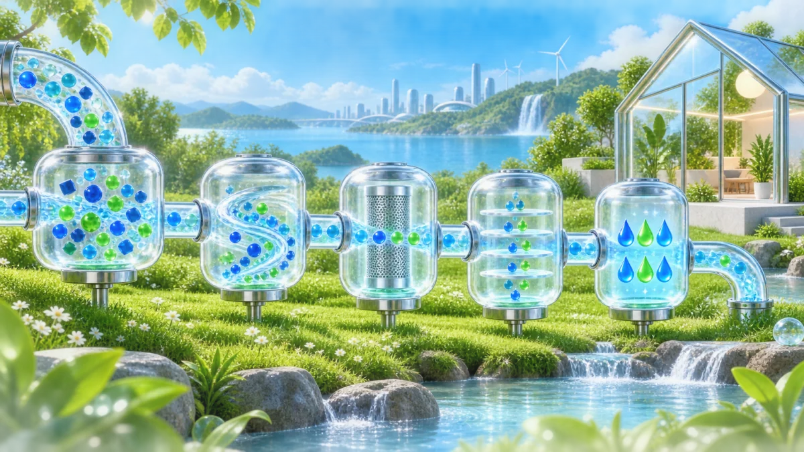

High-Throughput Backend Engineering
Architecting idiomatic Go (Golang) microservices and Kotlin backend services with clean architecture, strict concurrency controls, and optimized PostgreSQL persistence.
Cloud · Backend · Distributed Systems
I’m Isabela Chaves, a software engineer working across Go microservices, Kubernetes, AWS platform architecture, and the bare-metal Linux foundations beneath them.
About me
I have been drawn to technology since age ten, when I began using Ubuntu and writing C in Code::Blocks. As a teenager, I spent countless hours compiling kernels, deploying Linux services, and exploring low-level programming to understand how operating systems tick.
While earning my Bachelor of Laws, I concentrated on the intersection of technology and regulation, serving as a judicial assistant where I worked on criminal LGPD compliance and digital evidence chain-of-custody. Since 2023, I’ve returned to computing with complete dedication—following USP’s Computer Science foundational curriculum and building production-grade cloud, backend, data, and hardware systems.
Expertise
Four engineering disciplines connected into one coherent, production-ready skillset.
Architecting idiomatic Go (Golang) microservices and Kotlin backend services with clean architecture, strict concurrency controls, and optimized PostgreSQL persistence.
AWS infrastructure orchestration, Kubernetes container lifecycles, declarative IaC via OpenTofu / Terraform, and autoscaling CI/CD runner pipelines.
S3 object storage lakes using Apache Iceberg, query optimization via Presto/Athena, semantic graph embeddings, and real-time observability via Prometheus and Grafana.
Domain expertise applying LGPD/GDPR frameworks, verifiable digital chain-of-custody, and regulatory-compliant architecture design in sensitive environments.
Featured Systems & Projects
Real-world projects demonstrating architectural depth, hardware exploration, and distributed resiliency.
A physical multi-node homelab running Kubernetes clusters, custom persistent storage volumes, and distributed data pipelines designed for stress-testing failovers, disaster recovery, and Prometheus observability.
Implementing a custom 16-bit processor in Verilog to explore instruction set architecture (ISA), datapath execution, register files, and control units beneath the OS kernel.

Production · Graph AIInteractive exploratory mind map engine using high-dimensional vector embeddings and cosine similarity to render thousands of interconnected nodes and dynamic edges with sub-second retrieval latency.
Credentials
Universidade Regional do Cariri (URCA) · Concentration in Digital Evidence, Legal Reasoning, and Data Privacy.
Comprehensive hands-on study in cloud topology, scalable VPC design, IAM least privilege, and S3/Athena big data platforms.
Practical container orchestration, cluster networking, persistent volume provisioning, and control-plane maintenance.
Technical Index
Get in touch
I’m open to international roles across backend engineering, cloud infrastructure, and distributed platforms.